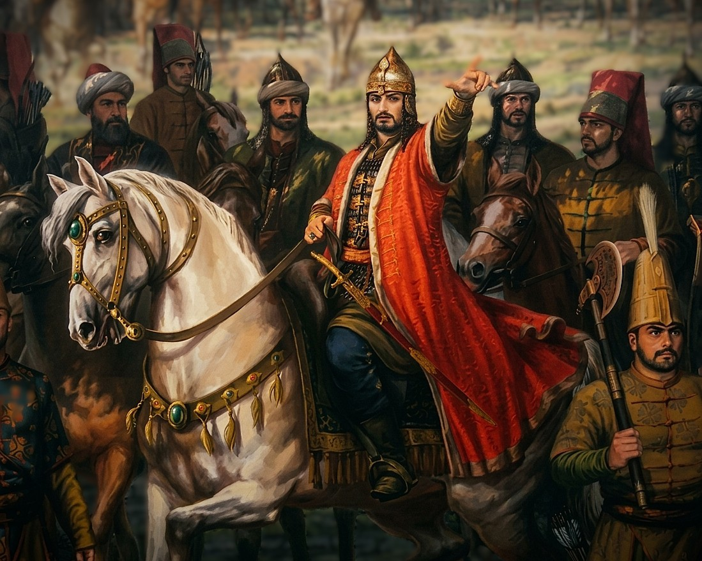
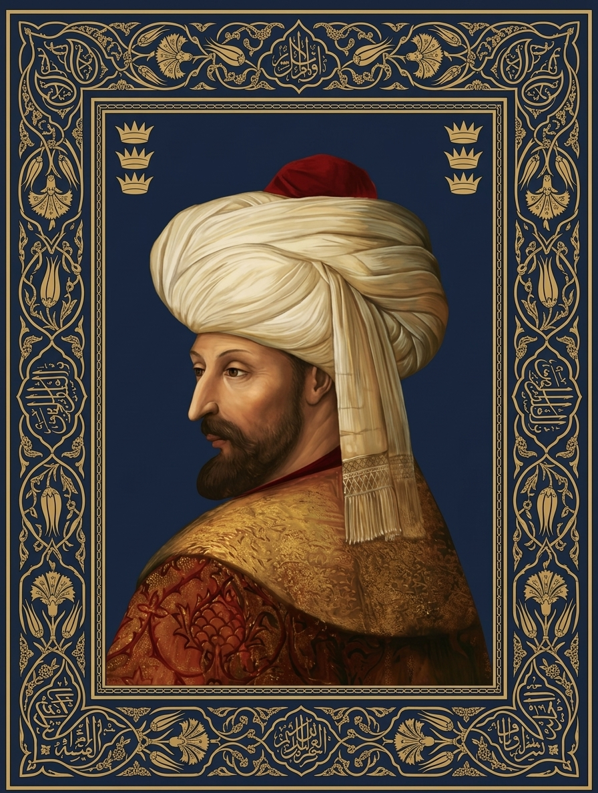
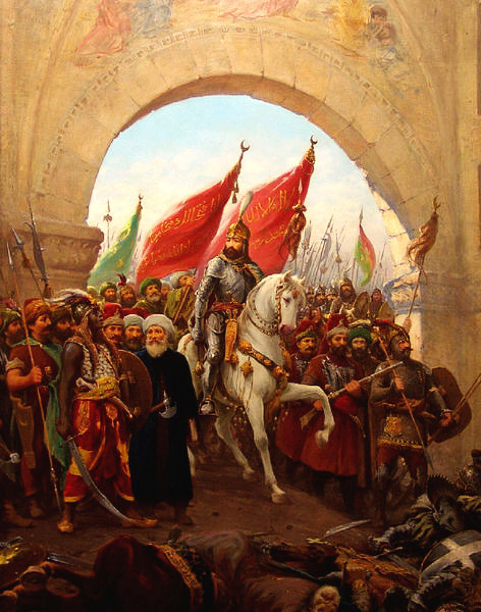
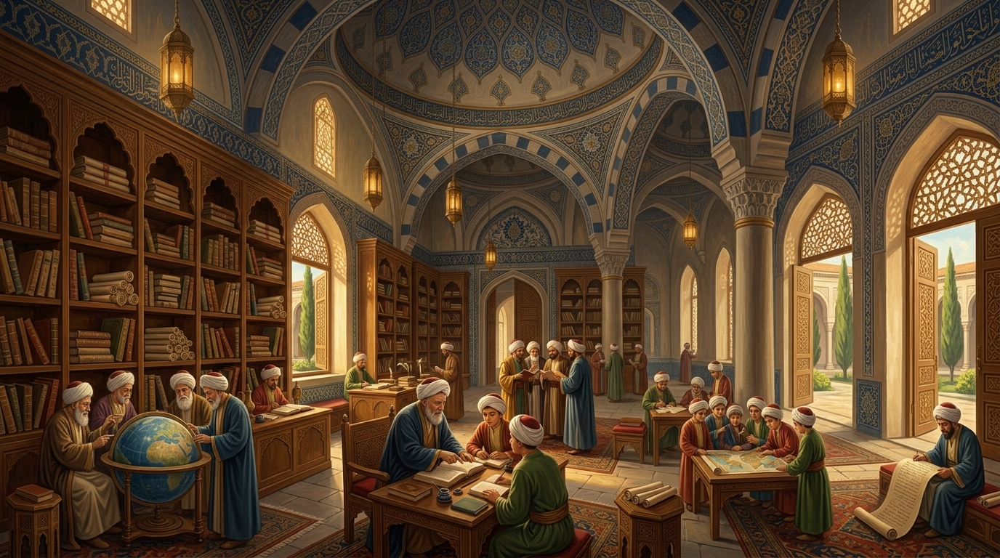
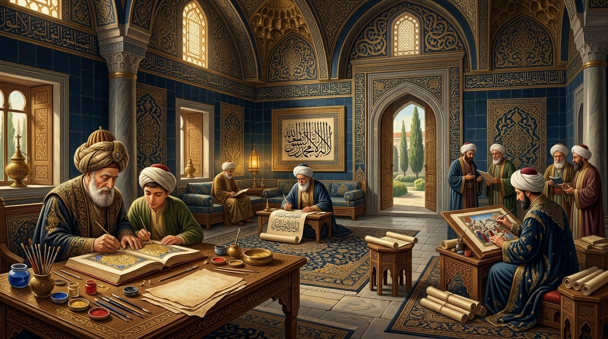
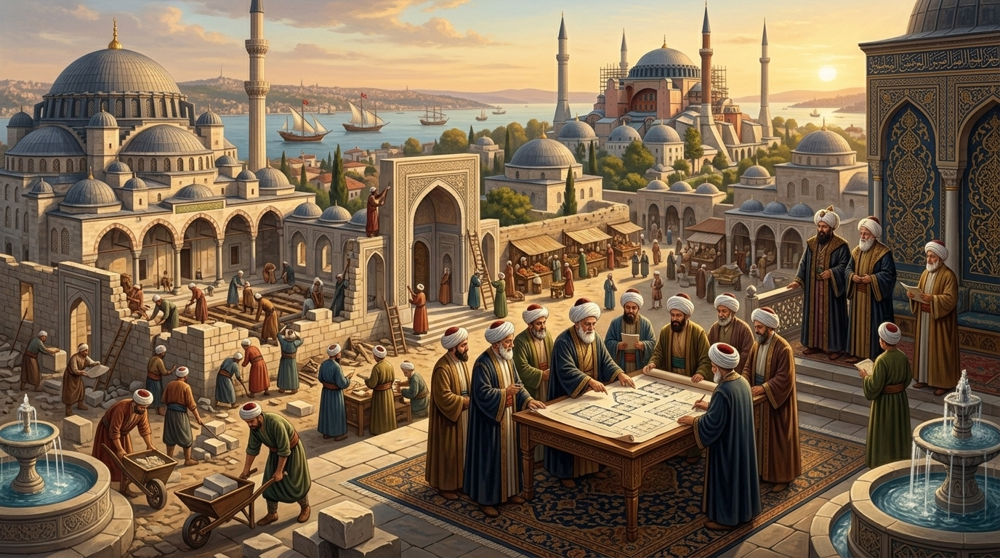
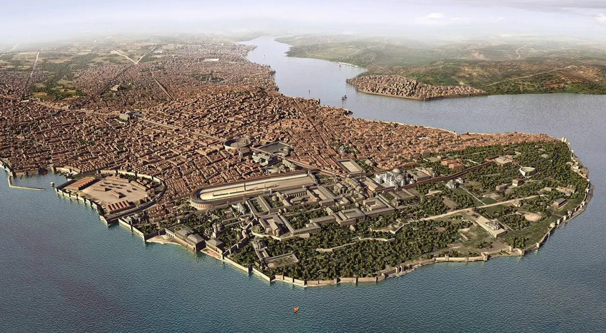
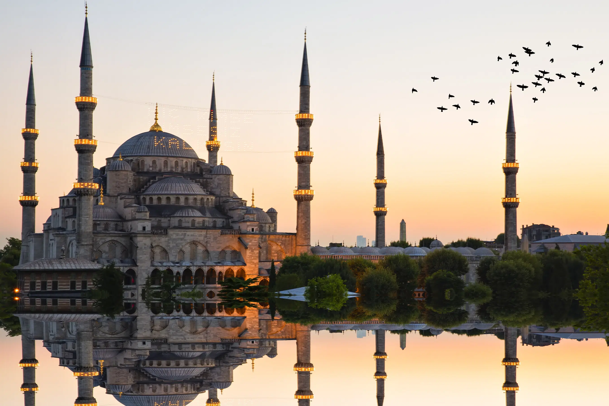
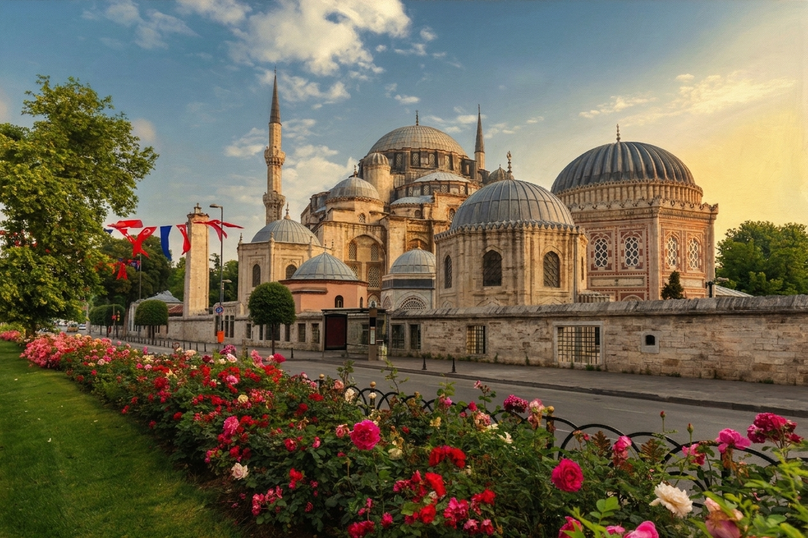

Known as Mehmed the Conqueror, he led one of history's most remarkable military campaigns and captured Constantinople in 1453. Beyond his achievements on the battlefield, he was a patron of learning, culture, and statecraft whose legacy continues to echo through the centuries.


Mehmed II, also known as Fatih Sultan Mehmed Khan, was born in 1432 in Edirne. As the son of Sultan Murad II, he received a strong education in history, military strategy, languages, and leadership from an early age. His intelligence and ambition quickly distinguished him as a future ruler.
After becoming Sultan in 1451, Mehmed set his sights on Constantinople, the capital of the Byzantine Empire. Through careful planning and determination, he successfully conquered the city in 1453 at the age of twenty-one, earning the title "Mehmed the Conqueror."
Following this historic victory, Mehmed expanded the Ottoman Empire and strengthened its government. He also supported learning, culture, and the arts, helping transform Constantinople into a thriving center of civilization. His achievements left a lasting mark on world history and secured his place among the most influential rulers of all time..
1432 - Born in Edrine
1444 - Became 1st Time Sultan
1451 - Became Sultan Again
1452 - Conquered Constantinople
1461 - Annexed Trebizond
1481 - Passed Away

For centuries, Constantinople was considered one of the strongest cities in the world. After becoming Sultan in 1451, Mehmed II made its conquest his primary goal, carefully preparing his army and developing new military strategies.
The siege began on 6 April 1453 and lasted nearly two months. Through determination, leadership, and tactical brilliance, Mehmed guided the Ottoman forces despite strong resistance from the city's defenders.
On 29 May 1453, Constantinople fell to the Ottoman Empire, earning Mehmed the title "Fatih" (The Conqueror). This historic victory ended the Byzantine Empire and secured his place among the most influential rulers in history.
"Either I will conquer Constantinople, or Constantinople will conquer me."
"In order to see the boundaries of the probabilities, we need to try impossible."
"If even a single strand of hair in my beard were to learn a secret of mine, I would cut it from the root."
"True art is to create a magnificent city and fill the hearts of its people with happiness."

Mehmed II welcomed scholars from different regions and encouraged the study of history, science, philosophy, and languages. His support helped make Constantinople an important center of learning.

The Sultan appreciated art and literature, inviting painters, poets, and craftsmen to his court. Under his patronage, artistic expression flourished everywhere and throughout the Ottoman Empire.

After the conquest of Constantinople, Fateh Sultan Mehmed oversaw the construction of mosques, schools, markets, and public buildings. These projects transformed the city into a thriving imperial capital.

Mehmed II transformed the Ottoman Empire into a major world power. His military victories and administrative reforms laid the foundation for centuries of Ottoman strength and influence. His leadership shaped the future of the empire for generations.

After the conquest of 1453, Mehmed rebuilt Constantinople into a thriving center of trade, culture, and government. The city would later become one of the most important capitals in the world. He made Constantinople the heart of an empire.

Known as Fatih ("The Conqueror"), Mehmed II remains one of history's most influential rulers. His achievements continue to be studied and admired by historians, leaders, and scholars around the globe. His legacy continues to inspire generations.